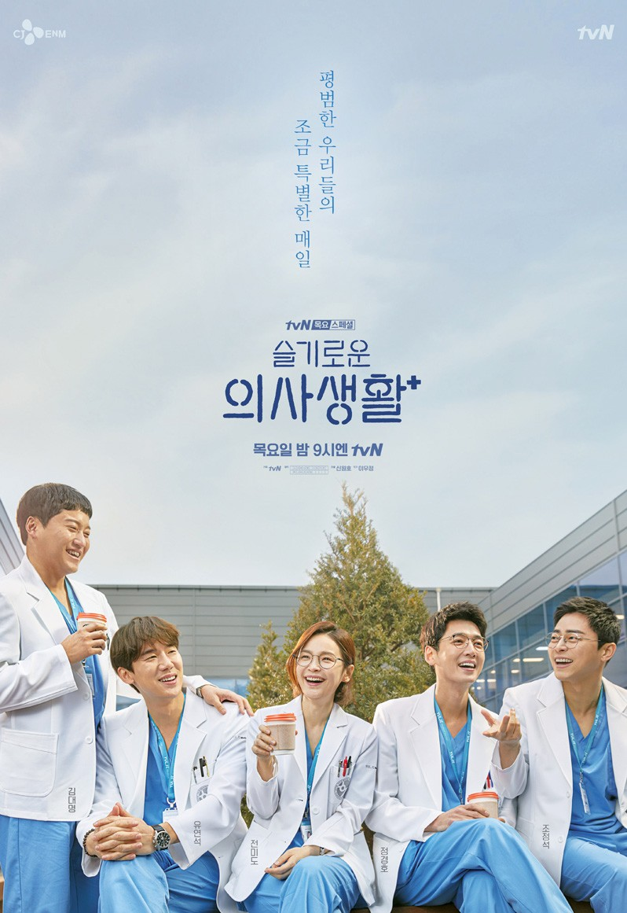
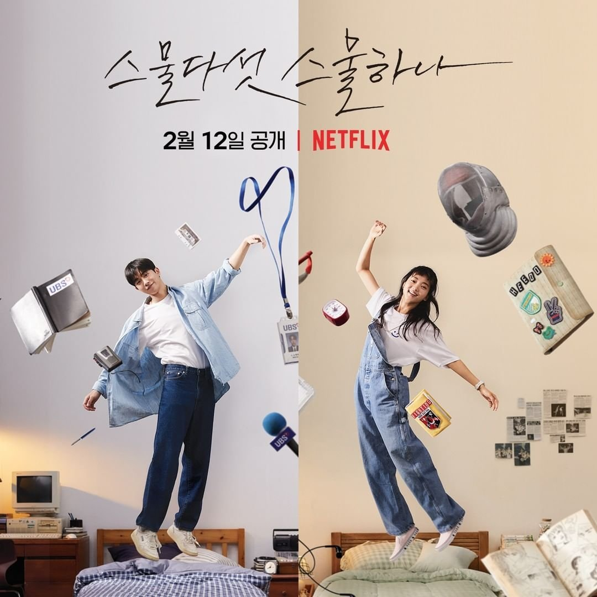
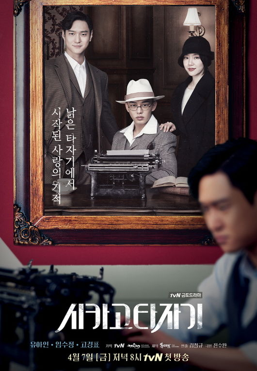

me top 10 k-dramas
1. reply 1988
i think what makes this top 1 is the nostalgic factor. no, i was not born in da 1980s. it was how similar the life of the characters and the setting of the neighborhood that made it nostalgic for me. first ep, all the moms yell at their children to come home to eat dinner. the narrow yet friendly and tight-knit neighborhood that tied it all together.

2. hospital playlist
i haven't even finished ss2 yet but i already know its gonna be gud. lee ik-jun is my fav char, but kim jun-wan is my spirit animal. even tho i did list out my faves (solely bc they stand out to me the most), i actually like all the characters in the show bc they show that humans are full of flaws, but they can have character developments!!! UGH YES character developments are what make this show so amazing. u love to see people grow and change into the best version of themselves along with the people they love and the job that they're passionate about.

3. twenty-five twenty-one
again, character developments = exquisite fr!!! also enemies to friends trope!!!. i wish that happen more often in real life, rather than friends to enemies trope. again, passionate people motivate me so so much. it gives me joy to see people love what they are doing, even though they are at a stagnant stage of their growth. i love seeing their process of overcoming their struggles. it gives me a comfort for being in the stagnant stage of my life too. bc i used to, and still, kinda hate my life bc i just think it's so pointless?? like we all just have this endless cycle of life, no matter what we do, we all die in the end. and i once felt that my life was so repetitive. i go to school, do homework, eat, shower, sleep, and repeat. maybe socialize sometimes, but those memories only gave me temporary happiness. same with other people i see in my life, they do the same thing as me. but through these kdramas, i was able to see it's not the end that matter, it's the process that gives life meanings. i think this ties into how 2521 ended bc a lot of fans complained about the ending, and they made up so many alternate endings to make themselves relieved of the disappointment they felt towards this kdrama. but i dont think we should focus on the ending, i think we should focus on the process. and in the end, the characters are happy with their life, so why should we interfere and change what already been done?

4. chicago typewriter
such an underrated kdrama!!! i swear i have never ever heard anyone mentioned this kdrama in my life!! since i watched it so long ago, i don't rmb much what happened. i just rmb i really enjoyed the fantasy aspect of finding out the truth of the past. love, friendship, betrayal, and grief. and the angelic music. i think the music is what i enjoyed most from this kdrama. it's very different from other kdrama ost i've listened to. also chicago typewriter is a gun, not a name of a typewriter. and the character han se-joo in the past? omg he has such handsome hair!! his hair was what inspired me to cut my long hair in senior year of high school!! and i went to prom in a suit to match my tomboy haircut. i would like to see how i would look in a ball gown, but no regret bc suit!! i love men in suit. and it's life imitates art, not art imitates life anymore LOL

5. all other kdramas LOL
i need to rewatch the kdramas i watched 4 years + ago to re-evaluate them bc i feel like my taste in kdrama now vs. then are so so so so different. but honorable mentions: my love from another star, the sun embracing the moon, pinocchio (i really wanna rewatch this one), descendant of the sun (omg younge me was so obsessed with song joong-ki that i made a fan account for him LMFAO *slams keyboard*), crash landing on you, strongest delivery man, hometown cha cha cha, the heirs (HAHA the terrible kdrama that every teenage girl used to love, i swear every person i talked to was like idk why i used to love this kdrama so much bc after rewatching it, i think it's so cringe LOL), god of study, moon lovers: scarlet heart ryeo, strong woman do bong-soon, weightlifting kim bok-joo, extraordinary lawyer woo young-woo, and bread, love and dream. there are more but these are all the kdramas i rmb enjoyed watching cuz i watched it recently or it's popular enough for me to rmb.
do not deserve ranking. kdramas i do not recommend bc it's a waste of time
bride of habaek: absolutely terrible, why did i try to watch 6 out of 16 eps of this. i hoped that it's gonna get better, nope it didn't. i got worse each episode.
love alarm: lamest romance i've ever seen. oh ho ho lemme determine how much i love you with this dumb app
record of youth: idek man?? female lead was weird.
start-up: i love the concept of this kdrama bc it is such a good kdrama that will motivate cs majors and coders to do great thing with their coding knowledge, but the romance concept was just weird. like WHY? WHAT WAS THE REASON NAM DO-SAN BECOME THE MALE LEAD??? WHAT ABOUT GOOD BOY HAN JI-PYEONG?!
a controversial/unpopular opinion ranking. an overrated kdrama
goblin: it was cute at first, but over time, it just felt kinda weird bc of the age gap. i didn't see much chemistry between the male lead and female lead. idk why but it feels like the female lead was just like a young child in comparison to the matured male lead. imagine a small chick following its mommy, that's how i view their relationship.